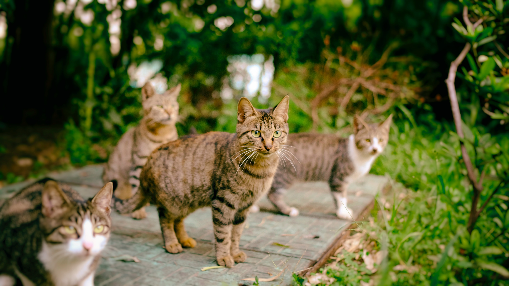

고양이의 종류
고양이는 크게 장모종과 단모종으로 나뉜다. 국내에서는 품종묘를 제외하면 단모종의 비율이 압도적이다. 길에서 흔하게 볼 수 있는 고양이는 대부분 코리안 숏헤어라는 종으로, 4가지의 모색(흑, 백, 치즈, 고등어)가 섞인 형태로 나타난다. 털 색과 모양에 따라 턱시도, 삼색이, 카오스 등등의 이름을 붙이기도 한다.
반면 '품종묘'라 불리는 고양이들은 모색과 생김새에 일정한 규칙을 가진다. 국내에서 사랑받는 종으로는 샴, 터키시 앙고라, 노르웨이숲, 브리티시 숏헤어, 러시안블루, 스코티시 폴드, 먼치킨 등이 있다. 그러나 순혈 품종묘, 혹은 독특한 외형의 고양이를 얻기 위한 브리더들의 고양이 공장, 근친교배와 같은 문제가 유전병을 일으킨다는 사실이 수면 위로 드러나며 최근에는 품종에 대한 집착이 줄어드는 추세다.
